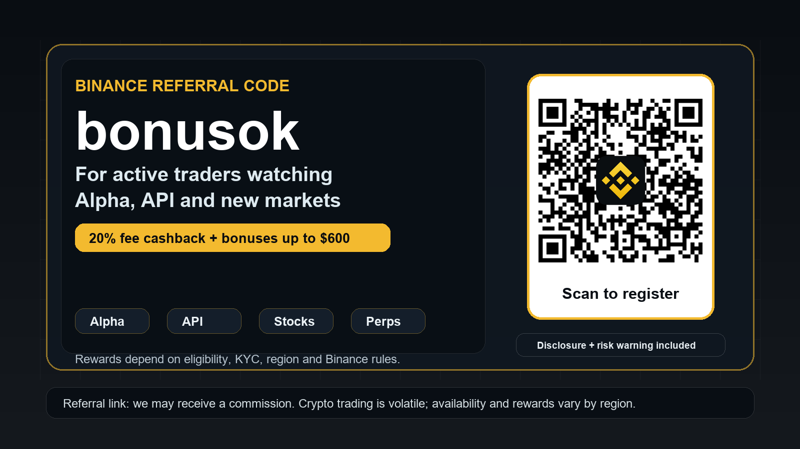

Binance Alpha competitions create time-sensitive trading hooks. That attracts users who monitor markets, volume requirements and reward rules instead of passive bonus hunters.
Binance referral code bonusok for traders who actually plan to trade.
Binance is not just a signup bonus page right now. Recent updates point toward active trading use cases: Alpha competitions, Prediction Markets API, Binance Stocks, and TradFi perpetual contracts. If you are opening a new account, use the referral field deliberately, then verify the exact rewards before depositing.
Disclosure: this page contains a referral link. We may receive a commission if you register or trade through it.

The Prediction Markets API announcement matters for systematic users because it mentions market data, trade execution and position management in trading workflows.
Binance Stocks and TradFi perpetual launches widen the reason to compare Binance against single-purpose exchanges, especially for active users who want one account for several market types.
Current tracked offer
Our local campaign database tracks the Binance referral link as bonusok, with 20% fee cashback and bonuses up to $600, subject to eligibility, KYC, region, product availability and Binance rules.
Do not treat the maximum bonus as guaranteed. After registration, check the referral confirmation, Rewards Hub, fee page and product access in your own account before trading.
Active-trader checklist before you deposit
- Confirm the referral code or link is applied before completing registration. Referral IDs usually cannot be added later.
- Complete only the KYC level required for your intended products, and check whether Binance, spot, futures, stocks, Alpha or prediction-market features are available in your country.
- Open Rewards Hub and fee pages inside your own Binance account. Verify the actual cashback, voucher and task rules shown there.
- For Futures, TradFi perpetuals or prediction markets, set max loss, leverage, stop rules and position size before the first trade.
- Track your own fees. A cashback offer is useful only when it reduces real trading costs without pushing unnecessary volume.
Who should skip this
- Users in restricted regions or users who cannot complete required verification.
- Beginners who would use leverage only to unlock a reward.
- Anyone expecting bonuses, fee cashback, Alpha rewards, stocks or prediction markets to be guaranteed or universally available.